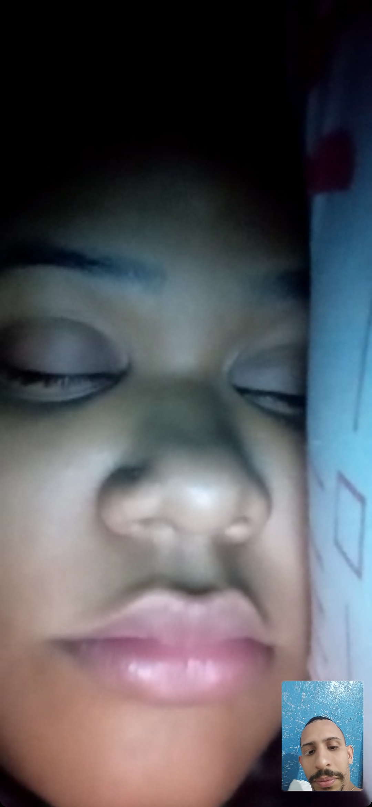
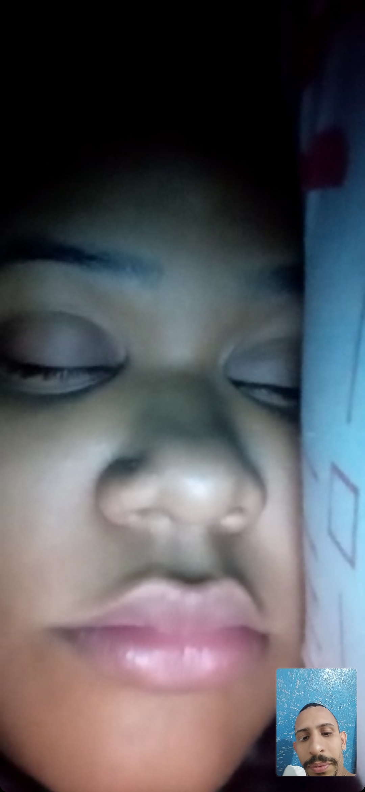

São vários os motivos, mas vou resumir em alguns apenas
• Sempre cuidou de mim, mesmo quando nem eu mesmo cuidava
• Você sempre me incentivou a ser mais, a não me contentar com pouco e em ter ambições antes mesmo de começarmos a namorar
• Você tem tentado se adaptar ao meu jeito grudento de ser, mesmo não estando acostumada a isso, mas por mim, faz esse esforço sempre que pode
• O fato de ter certa fragilidade, apesar de esconder isso, mas de vez enquanto, me permite ver... Essa confiança sempre aquece meu coração, e chega a me doer por não saber como fazer você sentir seu coração quentinho, acolhido e tranquilo nesses momentos
• VOCÊ É VOCE MESMA e não se deixa levar por nada que não acredite ou não goste...Sim, eu te amo por isso tambem...Isso já nos gerou várias discussões, mas eu te admiro por isso, por ter essa força de vontade, essa garra, essa determinação... e eu queria ser assim como você... Quem sabe um dia eu não consigo kkk
• Fora o fato de ser linda e gostosa pra caralho, que sem você fazer nada, só de olhar pra você aleatóriamente já me deixa de pau duro
 
